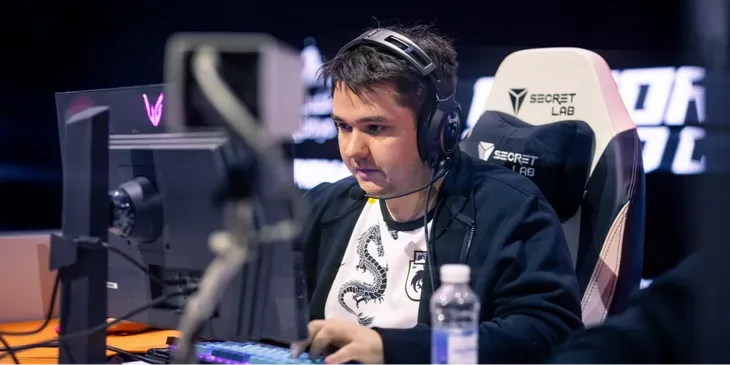
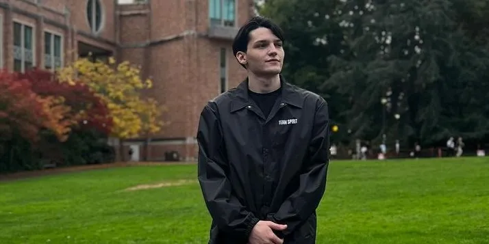
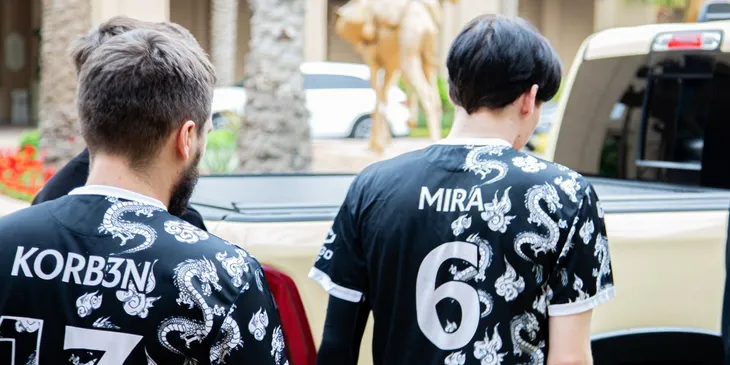
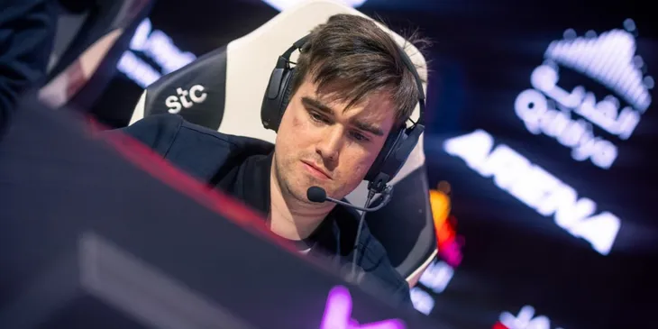

Raddan и Mira покинули основной состав Team Spirit и ушли в инактив

По завершении игрового цикла T13 два игрока Team Spirit, Илья "Raddan" Мулярчук и Мирослав "Mira" Колпаков, берут паузу в профессиональной карьере.
Нам всем, без сомнения, хочется и дальше наблюдать за игрой одних из самых успешных киберспортсменов мира. Однако четыре года напряженного графика, состоящего из тренировок, игр, поездок, турниров самого высокого уровня, работы на пределе и постоянной концентрации, никому не даются легко.
Желаем Илье и Мирославу отличного отдыха. Несколько лет пролетели, как один миг, но мы помним каждый момент вместе — победы, рекорды, совместные достижения, а также мгновения, которые мы проводили в перерывах между турнирами. Спасибо за два триумфа на The International, за Riyadh Masters и множество других турниров. Спасибо за эмоции, которые вы подарили фанатам.
Вы не просто стали одними из лучших — вы стали примером для сотен тысяч игроков и фанатов по всему миру. Пройти этот путь вместе с вами было настоящей честью. Мы будем с нетерпением ждать вашего возвращения, когда и где бы оно ни состоялось.
Mira после ухода в инактив: «В планах постримить и просто пожить жизнь»

Профессиональный игрок в Dota 2 Мирослав Mira Колпаков высказался после публикации заявления о его решении взять паузу в киберспортивной карьере. На личном канале в Telegram он рассказал, чем собирается заниматься вместо участия в соревнованиях.
Mira выступал на профессиональной сцене Dota 2 c 2019 года. Он представлял Cascade Esports и Team Spirit. В составе последней он дважды выиграл The International, а также стал призером множества других крупных международных турниров. Об уходе Колпакова в инактив стало известно 18 сентября. С ним перерыв в карьере решил сделать Илья Raddan Мулярчук.
Korb3n рассказал, когда станут известны итоги решафлов на профессиональной сцене Dota 2

Менеджер Team Spirit Дмитрий Korb3n Белов сообщил, что информация о заменах в командах по Dota 2 после The International 2024 должна быть опубликована до конца сентября. На личном канале в Telegram он отметил, что большинству топовых клубов придется определиться со стартовыми ростерами в ближайшее время из-за ростерлоков.
Ранее в сети появилась масса слухов о трансферах на профессиональной сцене Dota 2. Команды не подтвердили большую часть информации, однако киберспортсмены уже указали на масштаб решафла. Сама Team Spirit объявила об уходе в инактив Ильи Raddan Мулярчука и Мирослава Mira Колпакова.
Miposhka об уходе Raddan и Mira в инактив: «Новая эра?»

Капитан состава Team Spirit по Dota 2 Ярослав Miposhka Найдёнов коротко прокомментировал уход своих тиммейтов Ильи Raddan Мулярчука и Мирослава Mira Колпакова в инактив. Ответ на заявление организации он опубликовал на личном канале в Telegram.
18 сентября представители Team Spirit объявили, что Raddan и Mira взяли перерыв в карьере. Колпаков пообещал назвать причины такого решения в ближайшие дни и отметил, что планирует начать больше стримить и чаще проводить время вне Dota 2.
Кто заменит Raddan и Mira в Team Spirit, неизвестно. Как отметил менеджер команды Дмитрий Korb3n Белов, все участники обновленного состава станут известны до конца месяца из-за ростерлоков на ближайших турнирах.